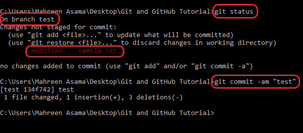
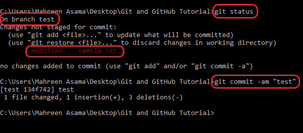

Git and GitHub Tutorial - Version Control System for Beginners

Overview
Git and GitHub are two technologies that every developer should learn, irrespective of their field.
This tutorial will help you understand what Git and version control are,
the basic Git commands you need to know, how you can use its features to boost your work efficiency,
and how to extend these features using GitHub.
Table of Contents
- What is Version Control System (VCS)?
- What is Git and Github?
- Installation of Git
- Create and Initialize a Project in Git
- Push a Repository to GitHub
- Git Operations and Commands
- Conclusion
What is Version Control System (VCS)?
Version Control Systems are the software tools for tracking/managing all the changes made to the source code during the project development. It keeps a record of every single change made to the code. It also allows us to turn back to the previous version of the code if any mistake is made in the current version. Without a VCS in place, it would not be possible to monitor the development of the project.
What is Git and GitHub?
Git is a version control system which lets you locally track changes you make to your files over time.
With Git, you can revert to various states of your files (like a time traveling machine). You can
also make a copy of your file, make changes to that copy, and then merge these changes to the
original copy.
GitHub is s an online hosting service for Git repositories.
Imagine working on a project at home and while you are away, maybe at a friend's place, you suddenly remember the
solution to a code error that has kept you restless for days. You cannot make these changes because your PC is not with you. But if you have your project hosted
on GitHub, you can access and download that project with a command on whatever computer you have
access to. Then you can make your changes and push the latest version back to GitHub.
Another awesome feature that comes with GitHub is the ability to collaborate with other developers from any location.
Installation of Git
In order to use Git, you have to install it on your computer. To do this, you can download the
latest version on the official website.
After installation, you can verify the current version of git installed on you PC, by running
following command on command line:
The next thing you'll need to do is to set your username and email address. Git will use this information to identify who made specific changes to files.
To set your username, type and execute these commands: (Make sure to replace "YOUR_USERNAME" and "YOUR_EMAIL" with the values you choose.)
Create and Initialize a Project in Git
When we are finally done with installing and setting up Git. It is now time to create our project.
Let's create a folder on desktop named Git and GitHub Tutorial.
Now create a simple text file sample.txt
in this folder with some dummy text.
Now to initialize your project, go to the respective folder's directory in command prompt and
simply run $ git init command.
This will tell Git to get ready to start watching your files for every change that occurs. Git
creates a new folder named .git to track your files. It looks like this:
Now that we have created and initialized our project locally, let's push it to GitHub.
How to Push a Repository to GitHub
There are some steps that we need to perform in order to push a respository on github (for the first time) or to push changes (later on).
Step-l Create a GitHub Account
To create your Github account, got to the official site.
Step-ll Create a new repsitory
You can click on the + symbol on the top right corner of the page then choose "New repository". Give your repo a name then scroll down and click on "Create repository".
Step-lll Add and Commit files
git add
When we first initialized our project, the file was not being tracked by Git. To do that, we use this command git add . The period or dot that comes after add means all the files that exist in the repository. If you want to add a specific file, maybe one named about.txt, you use git add about.txt
git status
Now to check the status of our files, we can use command git status. This command tells us about a file is modified or created new.
git commit
After adding the file to local git respository, use git commit -m "first commit" to finally commit your files and changings in them. -m is shorthand for message while the text inside the "" is the commit message.
Step-lV Push respository to GitHub
When you created your new github respository, it directs you to the page containing guidelines to
push local git repository on github. Let's say, if you created github repository named Git-Tutorial.
Copy and Paste the following commands to run on command line:
$ git remote add origin https://github.com/Mahreen-Asama/Git-Tutorial.git
$ git push -u origin main
The first command git remote add origin https://github.com/ihechikara/git-and-github-tutorial.git
creates a connection between your local repo and the remote repo on Github.
The second command git branch -M main changes your main branch's name
to "main". The default branch might be created as "master", but "main" is the standard name
for this repo now.
The last command git push -u origin main pushes your repo from your
local device to GitHub. You should get a response similar to this:
Modifications in File
To better understand this procedure, let us make some changings in out sample.txt file and check the git status. After removing point last four lines from sample.txt, checking the git status:
Now add, commit and push the above changings to github to match your working directory with the remote directory.
Git Operations
Several git operations available, some famous are git clone, Branching, Merging, git pull, delete, git log
Clone a GitHub Repository
Create a new folder on desktop named 'another user'. Go to your github repository, copy its URL and run the command git clone [url] on command line. Your github repository will be available locally now.
Make changes at two different repositories
Lets say we edited our txt file in local repository of 'another user' and pushed it to github. Then we edited same line in our previous local repository.
Now, if we try to push it to github, it will give us some error that our current repository is not synchronized with the remote one.
To resolve this issue, we will use git pull command.
But in this case, it will raise Merge Conflict for both the changings done in txt file.
Merge Conflict
Merge conflict raises when we edit same line of code from multiple repositories and try to push it. Then git gets confused which changings to keep and which to discard.
Resolve merge conflict
We can manually delete or keep the changings that we want in our file. For example, we resolve this conflict by deleting extra lines and fialize the following txt file.
Now, if we go to another local repository and pull all the changings done remotely, we can see that both local repositories will have same data.
Git log
This command tells you the details of commits alongwith modification date and time.
How to Use Branches in Git
With branches, you can create a copy of a file you would like to work on without messing up the original copy. You can either merge these changes to the original copy or just let the branch remain independent.
git branch
git branch command gives you the list of branches you currently have in a particular repository. It aslo highlights the brach in green color towards which head currenlty points.
git check
To create a new branch, run this command: git checkout -b test.
- checkout tells Git it is supposed to switch to a new branch.
- -b tells Git to create a new branch.
- test is the name of the branch to be created and switched to.
Now, as head is pointing towards test branch, lets do some changings in our sample.txt file in test branch and commit them. git commit -am "message" is used to add and commit files in one command.
 

Now, to move head (switch) to main branch, use git checkout main and see the content of your sample.txt file here.
git merge
We san see above the main branch sample.txt has no changings in it. It is because we haven't merged
test branch and main branch yet.
To merge them, checkout to the main branch and use git merge test command.
(NOTE: Resolve merge conflict if any raises here.)

git branch delete
Use git branch -D [branch name] to delete the branch you want. (NOTE: 'main/master' branch cannot be deleted).
Conclusion
This article covered the basic commands that'll help get you started using Git. We also started
learning how to use GitHub.
You should know that these are not all the commands that exist in Git – so feel free to do more
research to learn more commands and their uses.
Thank You!